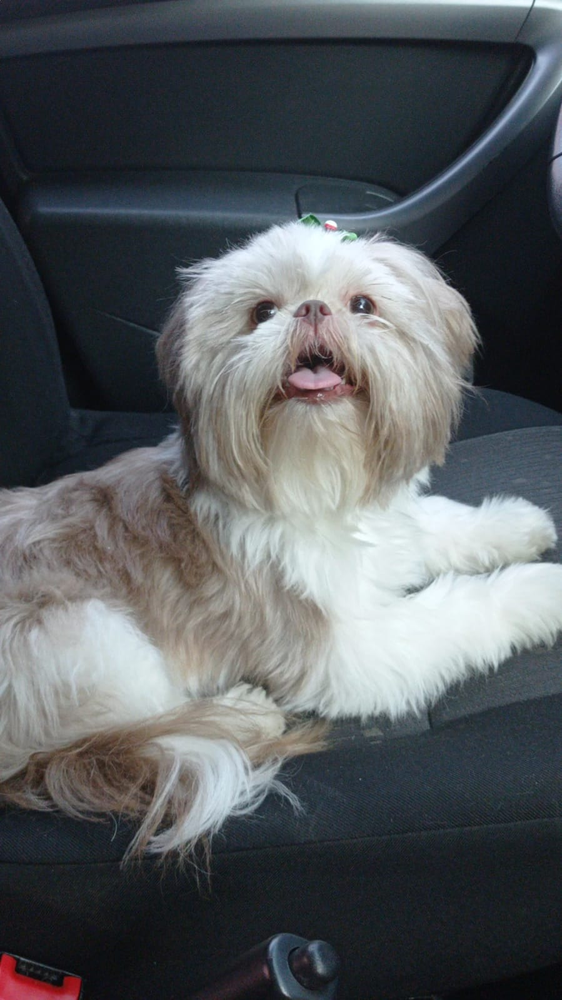
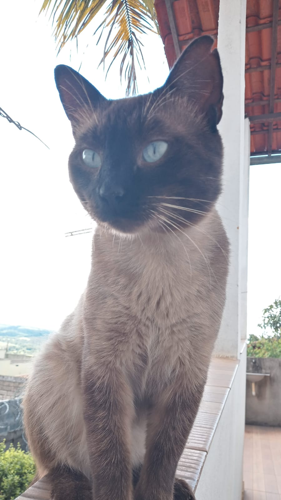
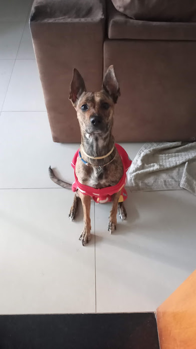
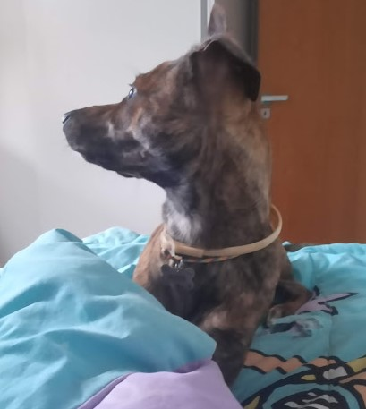
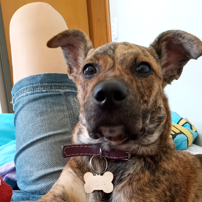

Cachorro SRD perdido no Bairro Santo Antônio
20/05/2022

Gato perdido no Bairro Grajaú
12/05/2022
Cachorro SRD perdido no Bairro Nova Suiça
22/05/2022

Cachorro SRD encontrado no bairro Jardim América
15/05/2022

Cachorro SRD encontrado no bairro Buritis
18/05/2022

Cachorro SRD encontrado no bairro Salgado Filho
21/05/2022